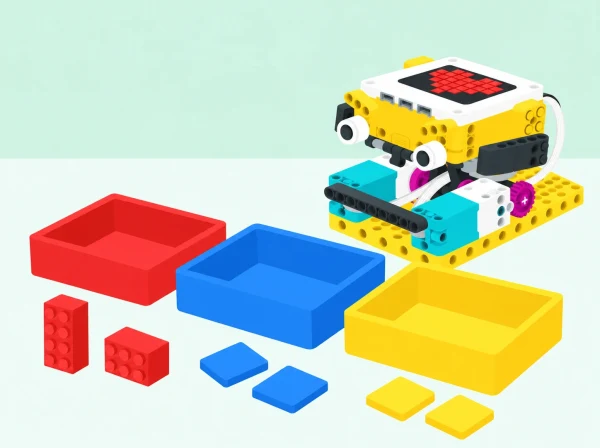

Podem crear una màquina que classifique mostres de prova i explicar amb honestedat què no sap identificar?
En un mercat de barri o en el menjador escolar es generen materials diferents i cal separar-los seguint les normes locals. L’equip dissenya amb SPIKE Prime un prototip de classificació que usa el color com a dada d’entrada. Primer provarà maons o targetes de colors coneguts; després compararà eixa tasca limitada amb el problema real de gestionar residus. Un envàs blau pot ser de diversos materials, i un mateix material pot tindre molts colors: la lectura cromàtica no és una identificació del material ni una instrucció de reciclatge.
Aprenentatges: formular criteris de classificació, relacionar una dada de sensor amb una regla, construir un mecanisme amb motors, provar-lo amb casos variats, calcular resultats sobre un conjunt conegut i comunicar límits i decisions pendents de validació humana.
Prepareu un set SPIKE Prime amb hub, motor(s) angular(s), sensor de color i elements de construcció; un dispositiu amb l’app SPIKE; mostres netes de maons o targetes mates de diversos colors; safates buides; regle o separadors per estabilitzar distàncies; full de registre i calculadora opcional. La il·lustració mostra un prototip conceptual fet amb peces compatibles; l’alumnat ha de construir i provar el seu propi mecanisme amb les peces disponibles, no copiar un muntatge oficial.
El sensor de color de SPIKE pot llegir color, reflectivitat o llum ambiental. La fitxa tècnica del fabricant dona una distància de lectura òptima aproximada de 16 mm, que pot variar amb la mida, el color i la superfície de l’objecte. Abans de classe, comproveu en el set físic la lectura i el mecanisme proposat; no feu dependre una decisió important d’un valor de sensor sense verificar-lo. Per a una classificació autèntica de residus, consulteu la guia vigent del municipi o centre i useu mostres netes o targetes, mai residus tallants, bruts o desconeguts.
Vocabulari: sensor, mostra, criteri, classificar, material, color, excepció, fals positiu, falsa detecció, prototip i validació. Distingiu el vocabulari de la màquina («ha llegit blau») del vocabulari del residu («és un envàs d’un material concret»).
Comenceu amb fotografies o una llista de materials que es podrien trobar al mercat o al menjador escolar. L’alumnat proposa com els separaria i quina informació necessitaria per decidir-ho. Contrasteu les propostes amb la guia de residus vigent al municipi o la informació del centre; el docent revisa les fonts abans de la sessió. No hi ha una regla universal de contenidors idèntica per a tots els llocs i la fitxa no determina quina norma municipal està activa.
Presenteu després una tasca molt més simple per a la maqueta: distribuir mostres de prova segons el color que reflecteixen. Cada equip defineix dues o tres categories amb símbols i colors, i anota on fallen eixes categories quan pensa en materials reals. Evidència: mapa «criteri del prototip / decisió que caldria confirmar en la guia local». Preguntes docents: «El color ens diu de quin material està fet? Quina font ens ajudaria a saber què fer amb un residu real?»
Esbossen un flux de treball amb entrada, lectura i eixides. Trien un muntatge segur: per exemple, una mostra es col·loca davant del sensor en una posició marcada i, després de la lectura, una comporta motoritzada la guia cap a una de dues safates. Una versió inicial pot moure la comporta manualment; la classe afegeix automatització només després d’haver comprovat la regla. No cal construir una cinta ràpida ni transportar peces amb risc d’encallament.
Munteu el sensor en un suport ferm i apunteu-lo perpendicularment a la mostra. Ajusteu una distància pròxima a la recomanació tècnica, aproximadament 16 mm, i manteniu-la estable durant les primeres proves. Reserveu temps per a l’aturada i accés segur a la comporta. Evidència: esbós anotat amb entrada, sensor, actuador i safates, més un prototip mecànic que es pot provar a mà abans d’engegar el motor. Preguntes docents: «Quina peça ha de moure’s? Com impedim que una mostra es quede atrapada?»
Comenceu llegint maons o targetes uniformes de colors inclosos entre les lectures admeses pel sensor. En l’app SPIKE, programeu una regla condicional simple: si es detecta un color triat, moure la comporta a una eixida; altrament, deixar-la en una safata de revisió. La regla exacta depén del muntatge i de les opcions del programari. Feu una lectura per mostra, registreu el valor retornat i decidiu si la categoria s’ha de canviar.
Repetiu cada cas almenys tres vegades en la mateixa posició. Després canvieu una condició de prova —distància, il·luminació o superfície— i compareu. Incloeu una mostra que no corresponga a cap categoria i un camí «no ho sé»; no forceu totes les lectures dins d’una categoria. Evidència: taula de mostres amb color esperat, lectures, eixida i excepcions; codi amb la condició comentada. Preguntes docents: «Quina lectura es repeteix? Què fa el sistema amb un color inesperat?»
Prepareu un conjunt de vint mostres de prova repetibles —peces LEGO o targetes, no residus reals— amb alguns colors coincidents, variacions de to, blanc/negre i superfícies mates o brillants. Barregeu l’ordre perquè el programa no puga aprofitar la seqüència. Cada mostra és validada per una persona que coneix la categoria de prova; l’equip que executa la màquina registra encerts, errors i «no ho sé».
Calculeu el percentatge d’encerts sobre les categories que el prototip havia de distingir i indiqueu el nombre total de proves. Compteu a banda les mostres enviades a revisió: no s’han de presentar com a encerts automàtics. Reviseu almenys un fals positiu i un cas ambigu. Evidència: matriu de resultats, càlcul explicat i llista de dos errors o límits observats. Preguntes docents: «Què ha fallat: la lectura, la regla o el mecanisme? Quin error seria més greu si fora un residu real?»
Canvieu una part del prototip o una regla i repetiu el mateix conjunt de mostres per comparar versions. Manteniu els casos i les condicions tan semblants com siga possible. Si millora una categoria però empitjora una altra, presenteu les dues dades. A continuació, compareu el classificador per color amb la decisió que exigeix una guia municipal: què pot automatitzar-se en la maqueta?, què necessita informació sobre composició i etiquetatge?, quan cal separar manualment o demanar ajuda?
Prepareu una exposició curta amb diagrama, taula de proves, percentatge, un límit del sensor i una proposta de millora futura. La conclusió ha de ser precisa: «classifica aquestes mostres per color en les condicions de prova», no «sap reciclar qualsevol residu». Evidència: prototip revisat, comparació abans/després i una recomanació per a una persona operadora. Preguntes docents: «Quina afirmació permeten les nostres dades? Quina informació addicional cal per a decidir sobre l’objecte real?»
Recolliu l’esbós del flux, fotografies del mecanisme sense persones, codi comentat, registres de calibratge i taula comparativa de vint mostres. Observeu si l’alumnat:
Es valora la qualitat de les proves i l’explicació dels límits, no una taxa d’encert perfecta. L’equip ha de distingir clarament entre mostra de prova i residu real.
No manipuleu residus reals ni objectes bruts, tallants, amb líquids o d’origen desconegut. Useu peces lleugeres; manteniu dits fora de la comporta i desconnecteu el motor abans d’ajustar engranatges. Manteniu la màquina a baixa velocitat i sota supervisió. Per a participar, oferiu rols de cartografia, muntatge, programació, lectura de dades i auditoria; es poden donar instruccions perquè una altra persona opere el dispositiu. Les categories han de tindre pictogrames i formes a més de colors per no dependre només de la visió cromàtica. Es pot presentar la conclusió amb gràfic, text, comunicació augmentativa o demostració sense contacte amb el mecanisme.
La proposta usa el sensor de color, hub, motors i elements estructurals del set SPIKE Prime. Consulteu la fitxa tècnica oficial del sensor de color i comproveu-ne el funcionament al set del centre. La guia municipal o del centre sobre residus s’ha de consultar de nou abans d’usar l’activitat, perquè el prototip no determina les normes locals ni substitueix una classificació humana.